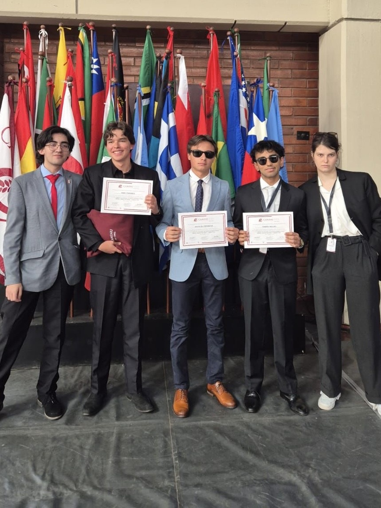
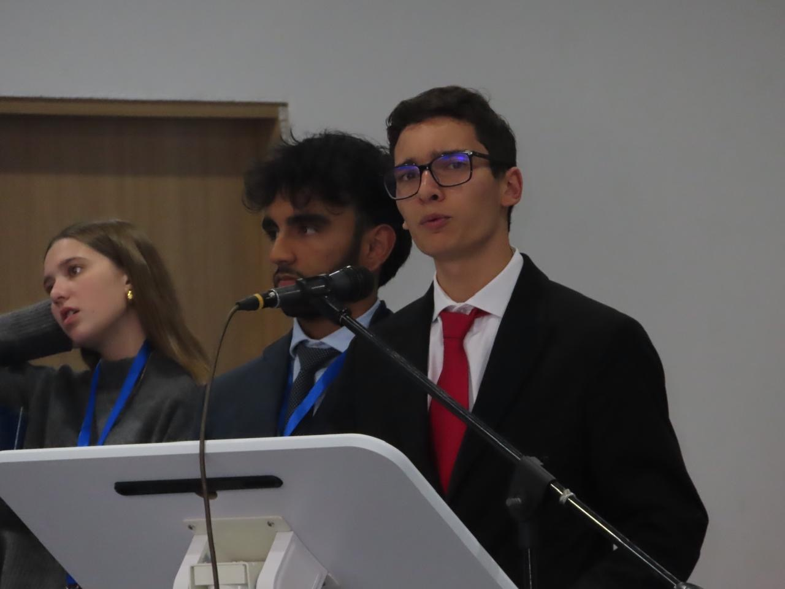
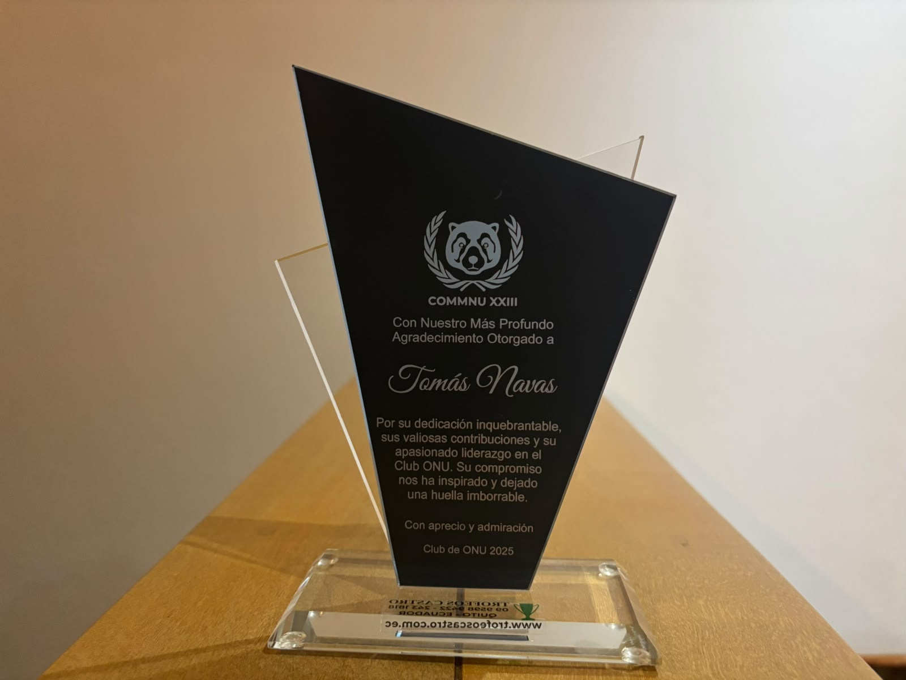

01 / DELEGATE
Competing & debating
My delegate experience included Best Delegate at SEKNU XIX, First Honorable Mention at CAMINU XXX, and First Verbal Mention at EAGLE MUN V.
In Model United Nations, I learned how to structure my ideas and communicate effectively while working within the constraints of my assigned country’s policies and the positions of others.
I developed strong research skills, learned to consider different perspectives when proposing solutions, and became more comfortable thinking on my feet under time pressure.
Probably my biggest takeaway, though, was seeing how rewarding it can be to work hard alongside a community of people who are also friends outside of the activity. We shared goals, supported each other however we could, and grew together to the point where I eventually found myself mentoring alongside the same people I had once learned from.
CHAIRING · DEBATE · DIPLOMACY
Across eight national and international Model United Nations conferences in Quito, I competed as a delegate, earned several distinctions, and later moved into committee leadership. These three moments capture that progression.

My delegate experience included Best Delegate at SEKNU XIX, First Honorable Mention at CAMINU XXX, and First Verbal Mention at EAGLE MUN V.

I later served as a committee chair for the Organization of American States at COMMNU XXIII and NATO at CAENU XX, moderating debate and guiding delegates.

My school MUN club recognized that involvement with its Leadership & Dedication award, reflecting the part of MUN I valued beyond individual conference results.